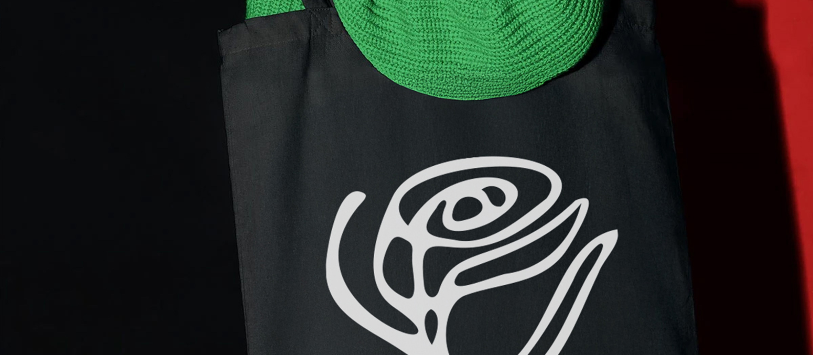
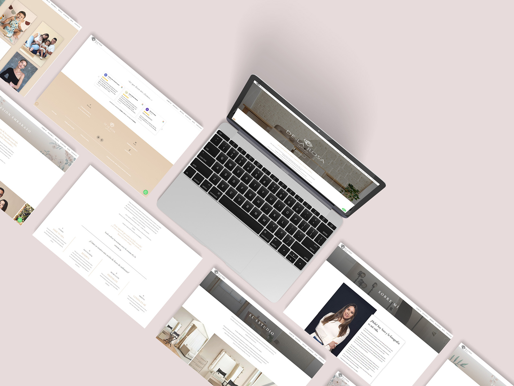
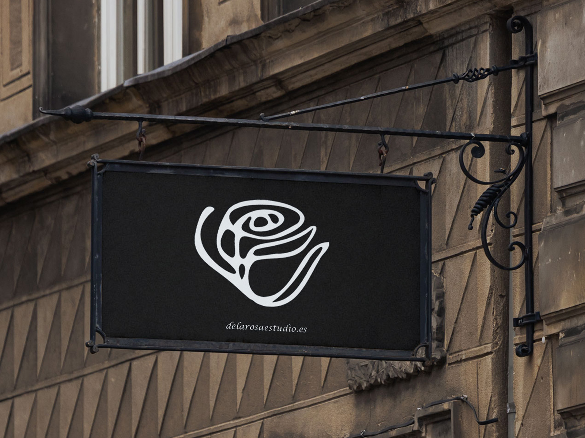
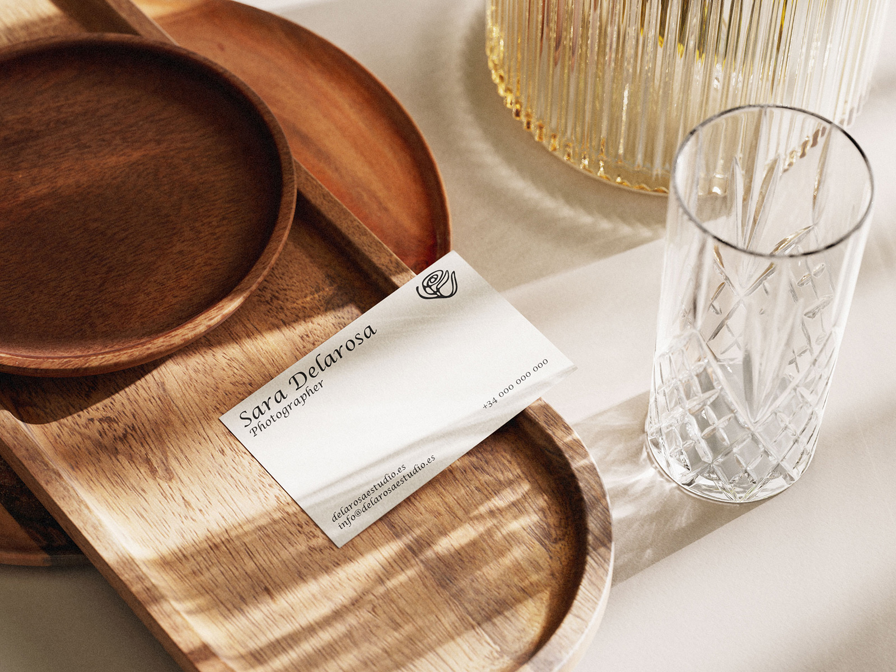
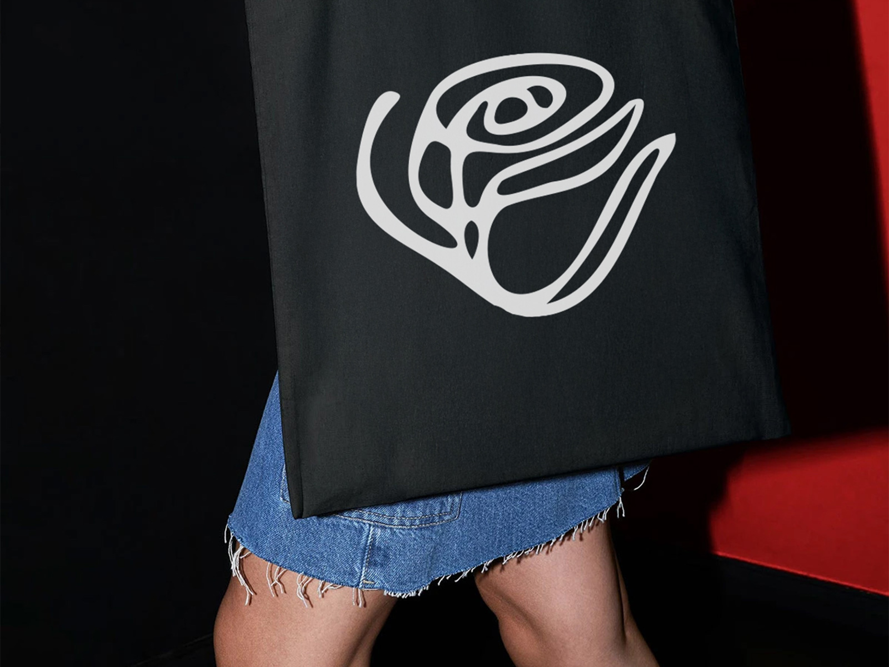

Proyectos / De la Rosa Estudio
De La Rosa Estudio es un estudio de fotografía que quería una identidad visual completamente distinta, alejada de lo típico. La clienta me pidió algo muy concreto: una ilustración de una rosa que no fuera literal, sino casi abstracta, dibujada con líneas sueltas y sensibles. Su idea era que la marca reflejara emoción, delicadeza y un punto de rareza que la hiciera única.

A partir de ahí construí todo el universo visual: un logotipo que gira en torno a esa rosa ilustrada, acompañado de una tipografía elegante pero cercana. El conjunto transmite sensibilidad y personalidad sin resultar recargado.
La web sigue ese mismo camino. El diseño está pensado para que las fotografías respiren, sin distracciones. Utilicé mucho espacio en blanco, una navegación sencilla y detalles sutiles que refuerzan la marca sin robar protagonismo al contenido. Todo se apoya en una estructura clara que permite al usuario moverse con facilidad, desde los proyectos hasta el contacto.
El resultado es una identidad que transmite justo lo que el estudio necesitaba: algo diferente, íntimo y con carácter. Un proyecto donde branding y web se conectan para hablar el mismo lenguaje visual.



